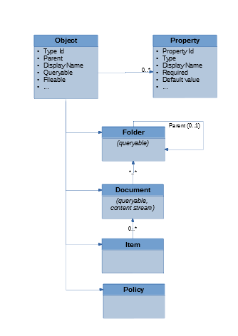
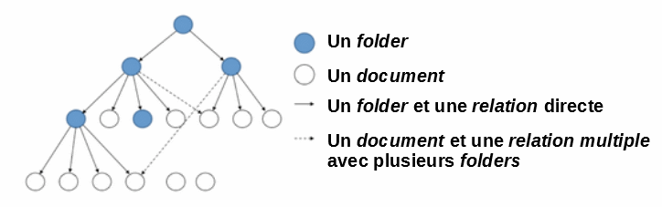
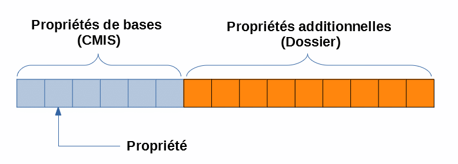
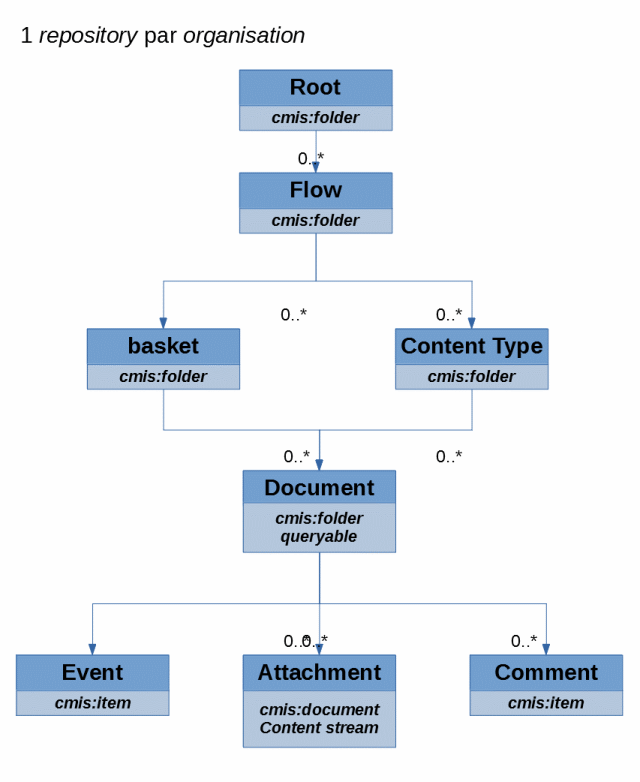
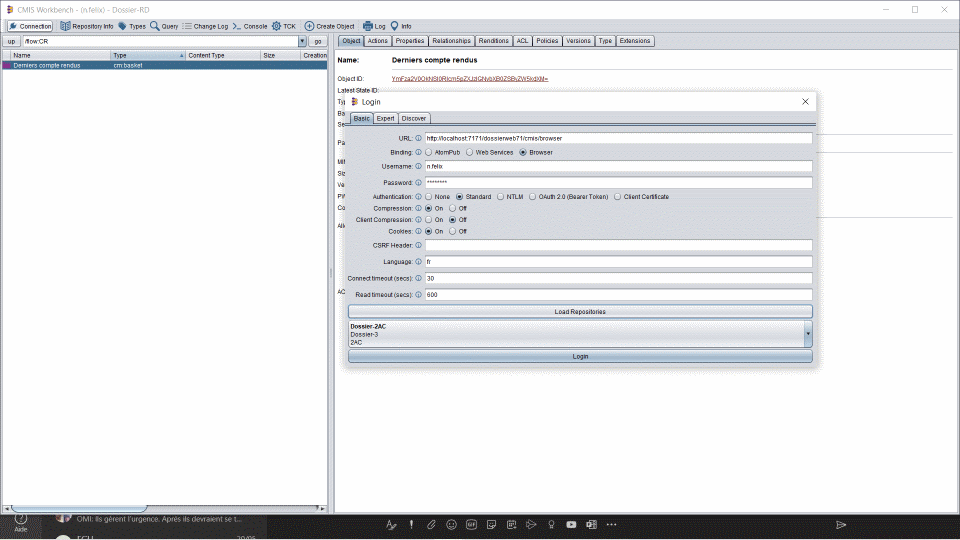

Digitech SA
ZAC Saumaty Séon - 21 av. Fernand Sardou - CS 40173
13322 Marseille Cedex 16
Copyright (c) 2020 Digitech SA, tous droits réservés.
| Date | Version | Etat | Objet | Rédacteur | Validateur |
|---|---|---|---|---|---|
01/05/2020 |
1.0 |
Validé |
Création du document |
Nicolas Félixbbbbb |
1. Introduction
CMIS (Content Management Interoperability Services) est
une norme/un standard géré par le consortium OASIS,
dont le but premier est de permettre une interopérabilité entre des systèmes de gestion de contenu (type geide par exemple).
Cette norme permet à des clients et des serveurs (ou des à des consommateurs et des fournisseurs)
de communiquer, échanger, dialoguer ensemble via HTTP (REST json ou XML AtomPub).
La dernière version publiée de la norme est CMIS 1.1.
|
Les webservices de type |
Dossier est compatible avec la norme CMIS dans sa version 1.1,
permettant à des applications tierces d’accéder au contenu de l’application Dossier.
Ce document décrit brièvement :
-
le format des APIs
CMISREST (leurs appels) -
une description du format des réponses
|
Cependant, celle-ci évolue au fil des demandes et des versions de
|
Les chapitres suivants décrivent
-
(succinctement) la norme
CMISet les concepts introduits par celle-ci (Chapter 2, ConceptsCMIS) -
de manière un peu plus détaillé le protocole Chapter 3, Browser Binding
-
l’utilisation de clients pour interroger
Dossiervia le protocleCMIS(Chapter 5, Clients CMIS)
2. Concepts CMIS
La norme CMIS introduit un certain nombre de concepts.
Ce chapitre décrit succinctement les principaux.
2.1. CMIS repository
Le point d’entrée de la norme CMIS est la notion de repository (qui pourrait être traduit par référentiel).
Celui-ci représente une instance d’un système de gestion de contenu, avec ses métadonnées, ses index, son contenu, ses fichiers…
Le repository est l’entité racine vers laquelle toutes les requêtes sont adressées, notamment en appels REST où le repository sert de chemin racine.
Le repository, par simple appel, renvoie sa description et ses capacités.
2.2. CMIS query
CMIS query est une synthaxe de requêtage basée sur la norme SQL-92.
|
Seules les |
Une synthaxe de requête consiste:
-
SELECT, suivi d’une liste des propriétés recherchées.
-
FROM, précisant la liste des objets interrogés/recherchés.
-
JOIN, dans le but d’effectuer une jointure entre différents types d’objets
-
WHERE, précisant les critères de sélection
-
IN et ANY, afin de requêter des propriétés multi-évaluées
-
CONTAINS, applicable sur des champs full-text (et donc le contenu des documents)
-
IN_FOLDER et IN_TREE, afin de rechercher dans une hiérarchie de documents.
-
ORDERBY, dans le but de trier les résultats.
Une query, et ses résultats, peut être paginée afin de faciliter la présentation (côté client) et optimiser les performances.
2.3. CMIS services
CMIS founit un ensemble de service accessibles via AtomPub ou Browser, selon votre choix.
Ces services sont les suivants:
- Repository service
-
Permet de découvrir la liste des
repositoriesdisponibles, leurs capacités, leur structure et quels types sont disponibles au sein de ceux-ci. - Navigation service
-
Permet de naviguer dans un
repositoryet son arborescence, en parcourant sa hiérarchie de dossiers parents/enfants.
Généralement, vous pouvez utiliser ces services pour obtenir les enfants ou parents d’un objet.
- Object service
-
Founit les opérations basiques de type CRUD (Create, Read, Update, Delete)
et les servuces de contrôle de tout objet (document,folder,policyetrelationship).
Pour les objets document, cela inclut la récupération et la mise à jour des propriétés, des policies et des fichiers associés (content stream).
Ces services retrouvent un (ou des) objet(s) à partir :
-
d’un chemin
-
ou d’un ID
Les clients CMIS peuvent alors également découvrir les actions disponibles, et autorisées à l’utilisateur connecté.
- Multi-filing service
-
Ces services vous permettent de constituer une hiérarchie entre
documentsetfoldersen ajoutant ou en supprimant un objet dans ou à partir d’unfolder. - Discovery service
-
Fournit les services de requêtage (
query) et de modifications. - Change service
-
Service de découverte de modification de contenu depuis la dernière vériication.
- Versioning service
-
Fournit un service d’accès à l’historisation des versions d’un objet, si celui-ci est versionné.
- Relationship service
-
Permet de créer, de gérer et d’accéder à des relations ou des associations entre des objets.
- Policy services
-
Permet d’appliquer des
policiesà un objet de typedocument.
Les policies sont des entités notamment uilisées pour gérer l’accès sécurité et accès aux documents.
- ACL service
-
Permet de gérer l’accès et les contrôles (Access Control Lists) permettant alors d’effectuer certaines opérations sur un objet/une entité.
2.4. CMIS object model
Dossier fournit un modèle d’objet CMIS permettant d’abstraire le contenu de Dossier.
Il implémente la navigation entre folders et documents.
CMIS permet la définition de types d’objets, chacun ayant ses propriétés, par exemple,
chaque objet possède un type, un ID, …
Les types d’objet supportent l’héritage (hiérarchie entre objets).
Les types document permettent d’accéder à du contenu binaire (généralement un fichier joint) si disponible, nommé content stream dans le jargon CMIS.
-
CMISdata model
2.4.1. CMIS folder object
Tout document est rattaché à un folder (ou plus exactement à une hiérarchie de folders).
Un document peut cependant appartenir à plusieurs folders.
CMIS folder/document relationships
2.4.2. CMIS document object
Les documents ont des propriétés - qui peuvent être multi-évaluées - et (optionnellement) un contenu binaire (content stream) - qui peut être versionné.
Chaque propriété :
-
est
typée: Object ID, string, integer, decimal, boolean, float, datetime. -
et possède des
attributs: nom, required, queryable, type …
CMIS document object
Un document peut également posséder des renditions, représentant une version alternative du content stream.
Les exemples les plus courants sont :
-
thumbnail: version imagette (aperçu) d’un
content streamdudocument, utilisée par les applications mobiles. -
application/pdf: version PDF d’un
content streamdudocument, utilisée par tous clients ne souhaitant pas effectuer de conversion de fichiers.
|
|
2.4.3. CMIS policy object
|
Ce type d’objet n’est actuellement pas géré par |
Un objet de type policy permet de représenter la stratégie/la politique d’accès à un document.
Le type ACL (Access Control List) est un sous-type de policy.
2.4.4. CMIS versioning
|
|
2.4.5. CMIS bindings/protocoles
Tout client peut communiquer avec un repository CMIS en utilisant l’un des protocoles disponibles:
-
Browser(recommandé) :
CMIS fournit un accès de type REST basé sur des échanges au format JSON.
Ce binding a été ajouté en version 1.1 de la norme CMIS afin de simplifier les échanges avec les applications web, mobiles,
ce type d’échanges étant populaires et très répandus depuis plusieurs années.
Cette implémentation utilise les seuls verbes GET et POST.
Les URLs d’accès et d’interrogation sont simples, par exemple, dans le but d’obtenir la liste des repositories.
http(s)://<hostname>:<port>/<context>/cmis/browseroù :
-
hostname: serveur (
IPouNom d’hôte) hébergeant l’applicationDossier -
port: port du service d’accès à l’application
Dossier -
context: context applicatif
Vous trouverez de pus amples informations dans le chapitre dédié Chapter 3, Browser Binding
-
AtomPub
Ce protocole RESTFul est basé sur Atom Publishing.
Les clients qui souhaitent exploiter ce protocole utiliseront l’url du Service Document
http(s)://<hostname>:<port>/<context>/cmis/atomPour une description complète de ces protocoles, veuillez vous reporter aux
spécifications officielles CMIS .
|
Les Web Services de type |
3. Browser Binding
|
Les informations indiquées dans ce chapitre sont succinctes, veuillez vous référer à la documentation officielle pour plus d’informations+ Il est préconisé d’employer un client, disponible par exemple ici pour abstraire et masquer la complexité des échanges. |
|
En utilisant un simple appel HTTP de type GET et quelques paramètres additionnels, le contenu d’un |
3.1. Paramètres additionnels communs
Les requêtes d’interrogation peuvent avoir des paramètres additionnels (optionnels)
| Nom | Valeur par défaut | Description |
|---|---|---|
filter |
* |
Liste des propriétés attendues en réponse (queryname au sens |
includeAllowableActions |
false |
Si true, la réponse doit indiquer également la liste des actions disponibles |
includeRelationships |
IncludeRelationships.NONE |
La réponse doit indiquer également les relations avec ce noeud.
|
renditionFilter |
cmis:none |
Liste des renditions attendues en réponse |
includePolicyIds |
false |
Si true, la réponse doit indiquer également la liste des policies disponibles |
includeAcl |
false |
Si true, la réponse doit indiquer également les |
3.2. Interrogation d’un repository
Afin d’obtenir des informations sur le repository, le paramètre callback devra être précisé.
http(s)://<hostname>:<port>/<context>/cmis/browser?callback=showRepositoryInfodont la réponse sera similaire à ce qui suit :
showRepositoryInfo(
{ "Dossier-2":
{"repositoryId":"Dossier-2",
"repositoryName":"Dossier-2AC",
"repositoryDescription":"2AC",
"vendorName":"Digitech",
"productName":"Dossier",
...|
l’attribut repositoryId est important car permet d’accéder aux données du référentiel ciblé. |
3.3. Récupération d’éléments
|
Dans les exemples ci-après, Dossier-2 correspond au repositoryId ciblé. |
La récupération d’un objet s’effectue simplement en spécifiant l' ID de l’objet souhaité.
http(s)://<hostname>:<port>/<context>/cmis/browser/Dossier-2/root?objectId=ZmxvdzpDUg%3D%3D{
"succinctProperties": {
"cmis:objectId": "ZmxvdzpDUg==",
"cmis:objectTypeId": "dossier:flow",
"cmis:baseTypeId": "cmis:folder",
"cmis:name": "Compte Rendu",
"cmis:description": "Flow created in simplified mode",
"cmis:createdBy": "dossier",
"cmis:creationDate": null,
"cmis:lastModifiedBy": "dossier",
"cmis:lastModificationDate": null,
"cmis:changeToken": null,
"cmis:parentId": "QGRvc3NpZXJfcm9vdEA=",
"cmis:path": "\/flow:CR",
"cmis:allowedChildObjectTypeIds": [
"cm:basket"
],
"dossier:flow:code": "CR",
"dossier:flow:contentType": "CR"
},
"allowableActions": {
"canDeleteObject": false,
"canUpdateProperties": false,
"canGetFolderTree": true,
"canGetProperties": true,
"canGetObjectRelationships": false,
"canGetObjectParents": true,
"canGetFolderParent": true,
"canGetDescendants": true,
"canMoveObject": false,
"canDeleteContentStream": false,
"canCheckOut": false,
"canCancelCheckOut": false,
"canCheckIn": false,
"canSetContentStream": false,
"canGetAllVersions": false,
"canAddObjectToFolder": false,
"canRemoveObjectFromFolder": false,
"canGetContentStream": false,
"canApplyPolicy": false,
"canGetAppliedPolicies": false,
"canRemovePolicy": false,
"canGetChildren": true,
"canCreateDocument": false,
"canCreateFolder": false,
"canCreateRelationship": false,
"canCreateItem": false,
"canDeleteTree": false,
"canGetRenditions": false,
"canGetACL": true,
"canApplyACL": false
},
"acl": {
"aces": []
},
"exactACL": true
}Dans le but de récupérer les enfants d’une entité, il faudra préciser ici le paramètre suivant :
cmisselector=childrenCe qui donne, pour obtenir les enfants de l’objet d’ID ZmxvdzpDUg== dans le repository Dossier-2
http(s)://<hostname>:<port>/<context>/cmis/browser/Dossier-2/root?objectId=ZmxvdzpDUg%3D%3D&cmisselector=children&succinct=trueLa réponse obtenue sera alors un json
{
"objects": [
{
"object": {
"succinctProperties": {
"cmis:objectId": "YmFza2V0OkNSI0Rlcm5pZXJzIGNvbXB0ZSByZW5kdXM=",
"cmis:objectTypeId": "cm:basket",
"cmis:baseTypeId": "cmis:folder",
"cmis:name": "Derniers compte rendus",
"cmis:createdBy": "dossier",
"cmis:creationDate": null,
"cmis:lastModifiedBy": "dossier",
"cmis:lastModificationDate": null
}
}
}
],
"hasMoreItems": false
}D’autres paramètres (que ceux indiqués dans le chapitre Section 3.1, “Paramètres additionnels communs”) sont disponibles
| Nom | Valeur par défaut | Description |
|---|---|---|
orderBy |
* |
Liste des queryname (suivis de ASC ou DESC), séparées par une virgules, définissant le tri souhaité. |
includePathSegments |
false |
Si true, la réponse contiendra pour chaque enfant lle path relatif. |
maxItems |
Nombre maximum d’éléments retournés |
|
SkipCount |
Nombre d’éléments passés (et donc non renvoyés en réponse). A utiliser en combinaison avec maxItems |
3.4. Opération Création/Mise à jour/Suppression
Les opérations de création, de mise à jour ou de suppression sont effectuées via une commande HTTP de type POST.
Le paramètre additionnel précisant le type d’opération est cmisaction, par xemple, pour une création
cmisaction=createDocumentTODO Exemples à ajouter
3.5. Recherche
|
L’application |
Dans le but de lancer une recherche (query), les paramètres suivants doivent être précisés :
cmisselector=query
q=<CRITERES DE RECHERCHE>Quelques exemples :
q=SELECT * FROM cm:document:cr WHERE cmis:creationDate >= '28/03/2020'
http(s)://<hostname>:<port>/<context>/cmis/browser/Dossier-2?cmisselector=query&succinct=true&q=SELECT%20*%20FROM%20cm:document:cr%20WHERE%20cmis:creationDate%20>=%20'28/03/2020'q=SELECT * FROM cm:document:cr WHERE cm:document:cr:crDes = 'Désignation'
http(s)://<hostname>:<port>/<context>/cmis/browser/Dossier-2?cmisselector=query&succinct=true&q=SELECT%20*%20FROM%20cm:document:cr%20WHERE%20cm:document:cr:crDes%20=%20'Désignation'q=SELECT * FROM cm:document:cr WHERE cm:document:cr:crDes LIKE 'Désign%'
http(s)://<hostname>:<port>/<context>/cmis/browser/Dossier-2?cmisselector=query&succinct=true&q=SELECT%20*%20FROM%20cm:document:cr%20WHERE%20cm:document:cr:crDes%20LIKE%20'Désign%'q=SELECT * FROM cm:document:cr WHERE cm:document:cr:crDes LIKE 'Désign%' AND cmis:creationDate >= '28/03/2020'
http(s)://<hostname>:<port>/<context>/cmis/browser/Dossier-2?cmisselector=query&succinct=true&q=SELECT%20*%20FROM%20cm:document:cr%20WHERE%20cm:document:cr:crDes%20LIKE%20'Désign%'%20AND%20cmis:creationDate%20>=%20'28/03/2020'q=SELECT * FROM cm:document:cr WHERE cmis:creationDate IN ('04/05/2020', '07/05/2020')
http(s)://<hostname>:<port>/<context>/cmis/browser/Dossier-2?cmisselector=query&succinct=true&q=SELECT%20*%20FROM%20cm:document:cr%20WHERE%20cmis:creationDate%20IN%20('04/05/2020',%20'07/05/2020')q=SELECT * FROM cm:document:cr WHERE cmis:creationDate NOT IN ('04/05/2020', '07/05/2020') ORDER BY cmis:creationDate DESC
http(s)://<hostname>:<port>/<context>/cmis/browser/Dossier-2?cmisselector=query&succinct=true&q=SELECT%20*%20FROM%20cm:document:cr%20WHERE%20cmis:creationDate%20NOT%20IN%20('04/05/2020',%20'07/05/2020')%20ORDER%20BY%20cmis:creationDate%20DESC3.6. Récupération du contenu d’un document
La récupération du contenu d’un document s’effectue en précisant les paramètres
cmisselector=content
objectId=<IDENTIFIANT DU DOCUMENT>http(s)://<hostname>:<port>/<context>/cmis/browser/Dossier-2/root?objectId=YXR0YWNobWVudDpDUiNEZXJuaWVycyBjb21wdGUgcmVuZHVzIzQ2MzMjNDI1Mg%3D%3D&cmisselector=contentLe corps (body) de la réponse sera alors le document streamé.
3.7. Bonnes pratiques
-
Réponses 'succinctes'
Les réponses, au format JSON, peuvent être verbeuses (i.e. représentant un important volume de données).
Ces réponses peuvent être abrégées/réduites en précisant le paramètre succinct=true.
En reprentant l’exemple du chapitre Section 3.3, “Récupération d’éléments”
http(s)://<hostname>:<port>/<context>/cmis/browser/Dossier-2/root/ZmxvdzpDUg%3D%3D?cmisselector=children&succinct=truela réponse sera alors :
{
"objects": [
{
"object": {
"succinctProperties": {
"cmis:objectId": "ZG9jdW1lbnQ6Q1IjRGVybmllcnMgY29tcHRlIHJlbmR1cyM0Njky",
"cmis:objectTypeId": "cm:document:cr#cr",
"cmis:baseTypeId": "cmis:folder",
"cmis:name": "jjj",
"cmis:description": "jjj",
"cmis:createdBy": "dossier",
"cmis:creationDate": 1589880601000,
"cmis:lastModifiedBy": "dossier",
"cmis:lastModificationDate": 1590482813000,
"cmis:changeToken": "MjYvMDUvMjAyMCAxMDo0Njo1Mw==",
"cmis:parentId": "ZmxvdzpDUg%3D%3D",
"cmis:path": "/flow:CR/basket:CR#Derniers compte rendus/document:CR#Derniers compte rendus#4692",
"cmis:allowedChildObjectTypeIds": [
"cm:attachment",
"cm:comment",
"cm:event"
],
"cm:document:cr:crTheme": "Entreprise Libérée",
"cm:document:cr:crDes": "Compte-rendu",
"cm:document:cr:crRedacteur": "FÉLIX Nicolas",
"cm:document:cr:crDate": 1589925600000
}
}
},
..., 4. Dossier CMIS serveur
4.1. Arborescence / object model
Dossier présente une réprésentation CMIS comme il suit.
-
DossierCMISdata model
4.2. Authentification
L’authentification au service CMIS Dossier est effectuée via une
Basic HTTP Authentication,
c’est-à-dire que le couple identifiant/mot de passe est transmis dans l’entête http encodé en base64
|
Cela sous-entend que pour une utilisation sur un réseau publique, le protocole HTTPS / TLS doit être mis en place. |
4.3. Limitations
L’implémentation de la norme CMIS dans Dossier n’est pas exhaustive, la norme définissant de nombreuses fonctionnalités optionnelles.
Voici les principales fonctionnalités non implémentées (en 7.1 de Dossier):
-
Versioning
-
Modifications des permissions et droits d'accès
-
Accès au Change logs
-
policies
De plus, les opérateurs suivants, définis dans la norme CMIS-SQL (voir liste et description ici), ne sont pas implémentés
-
JOIN
-
IN_FOLDER et IN_TREE
4.4. Préconisations
|
Comme déjà évoqué ici, pour des raisons de performances et simplicité, le protocole |
5. Clients CMIS
5.1. Apache Chemistry / opencmis
Plusieurs clients CMIS (1.1) gratuits sont disponibles, dont le CMIS workbench fournit par le projet Apache Chemistry.

Chaque intégrateur/développeur peut utiliser l’une des librairies disponibles pour implémenter son propre client, en suivant notamment les différents guides disponibles ici et là, ainsi que les exemples à disposition.
D’autres librairies existent également en dehors du contexte Apache Chemistry, comme celle-ci CmisJS.
5.2. Dossier CMIS client.
Dossier fournit, à partir de sa version 7.1, un client CMIS JAVA, basé sur le projet Apache Chemistry.
Celui-ci abstrait les principales actions utilisées.
|
La librairie, dossier-cmis-client.jar (actuellement en version 1.0.0), n’est pas disponible sur un référentiel |
Vous trouverez :
-
dans le chapitre suivant des exemples concrets.
-
en annexe l’interface principale
-
également en annexe les dépendances nécessaires à l’utilisation de la librairie dossier-cmis-client.jar.
5.3. Dossier CMIS : Cas d’utilisation
|
Toutes les opérations nécessitent au préalable une connexion à un |
public class CmisConnection {
/** The repository id. */
private static final String REPOSITORY_ID = "myRepoID";
private Session session = null;
private IDossierCmisClient cmisClient;
/**
* constructor
*
* @param appUrl dossier URL
*/
public CmisConnection(String appUrl) {
super();
cmisClient = new DossierBrowserCmisClient(url);
}
/**
* Main method.
*/
public static void main(String[] args)
throws Exception {
String dossierUrl = args[0];
String login = args[0];
String pwd = args[0];
CmisConnection con = new CmisConnection(dossierUrl);
Session session = con.connect2Repo(login, pwd);
}
/**
* connect to repository
*
* @param login login
* @param pwd password
* @return token Session
* @throws Exception ...
*/
public Session connect2Repo(String login, String pwd)
throws Exception {
Session session = null;
try {
// This call will work if there is only one repository !
session = cmisClient.createSession(login, pwd);
// else call
// session = cmisClient.createSession(REPOSITORY_ID, login, pwd);
}
catch(...){
}
return session;
}Si Dossier contient plus d’un repository (par défaut, 1 est défini par organisation), il vous faut :
-
spécifier l' ID du repository cible
-
soit parce que vous le connaissez
-
soit en interrogeant le serveur
CMISet en récupérant la liste desrepositories
-
/**
* get available repository IDs
*
* @param login login
* @param pwd password
* @return repo IDs
* @throws Exception ...
*/
public List<String> getRepositoryIDs(String login, String pwd)
throws Exception {
try {
List<Repository> repositories = cmisClient.getRepositoriesCmisInfo(login, pwd);
if(repositories != null) {
return repositories.stream().map(RepositoryInfo::getId).collect(Collectors.toList())
}
}
catch(...){
}
return Collections.emptyList();
}5.3.1. Récupération d’un objet
public Map<String, String> getObjectIDPropertiesAsString(Session session, String objectId)
throws Exception{
try{
CmisObjectWrapper obj = cmisClient.getObjectById(session, objectId);
return obj.getProperties().entrySet().stream().collect(Collectors.toMap(Map.Entry::getKey, e -> e.getValue().getValueAsString()));
}
catch(...){
}
}5.3.2. Récupération des enfants d’un objet
public List<CmisObjectWrapper> getObjectChildren(Session session, String objectId)
throws Exception{
try{
CmisObjectWrapper obj = cmisClient.getObjectById(session, objectId);
return cmisClient.getAllChildren(obj.getCmisObject());
}
catch(...){
}
}5.3.3. Récupération du contenu binaire d’un document
public ContentStream getContentStream(Session session, String objectId)
throws Exception{
try{
// attention, ContentStream#getStream, si utilisé, doit être fermé !
return cmisClient.getContentStream(session, objectId);
}
catch(...){
}
}
public String downloadContentStream(Session session, String objectId)
throws Exception{
try{
// renvoie le chemin absolu vers le fichier téléchargé
return cmisClient.downloadContentStream(session, objectId);
}
catch(...){
}
}il est également possible d’obtenir un contenu partiel du contenu
public ContentStream getPartialContentStream(Session session, String objectId, long offset, long length)
throws Exception{
try{
// attention, ContentStream#getStream, si utilisé, doit être fermé !
return cmisClient.getContentStream(session, objectId, offset, length );
}
catch(...){
}
}TODO Rendition à ajouter
5.3.4. queries
public List<CmisQueryResultWrapper> query(Session session, String query)
throws Exception{
return cmisClient.queryObjects(session, query);
}6. Annexes
6.1. Interface client Dossier
package com.digitech.dossier.cmis.client;
import java.util.List;
import java.util.Set;
import org.apache.chemistry.opencmis.client.api.*;
import org.apache.chemistry.opencmis.commons.data.RepositoryCapabilities;
import org.apache.chemistry.opencmis.commons.data.RepositoryInfo;
import com.digitech.dossier.cmis.client.exception.CmisClientException;
import com.digitech.dossier.cmis.client.exception.InvalidArgumentException;
import com.digitech.dossier.cmis.client.typedef.CmisObjectWrapper;
import com.digitech.dossier.cmis.client.typedef.CmisQueryResultWrapper;
import com.digitech.dossier.cmis.client.typedef.CmisTypeDefinitionWrapper;
/**
* Dossier Cmis Client interface
*/
public interface IDossierCmisClient {
/**
* inject basic credential (and default ones)
*
* @param login user login
* @param pwd user password
*/
void setCredentials(String login, String pwd);
/**
* inject language (and default one)
*
* @param language expected user language
*/
void setLanguage(String language);
/**
* create CMIS session on 1st repository, using already set credentials
*
* @return {@link Session}
* @throws CmisClientException in case of any exception
*/
Session createSession()
throws CmisClientException;
/**
* create CMIS session on 1st repository, using already set credentials
*
* @param repoId repository Id
* @return {@link Session}
* @throws CmisClientException in case of any exception
*/
Session createSession(String repoId)
throws CmisClientException;
/**
* create CMIS session
*
* @param login login
* @param pwd password
* @return {@link Session}
* @throws CmisClientException in case of any exception
*/
Session createSession(String login, String pwd)
throws CmisClientException;
/**
* create CMIS session
*
* @param repoId repository Id
* @param login login
* @param pwd password
* @return {@link Session}
* @throws CmisClientException in case of any exception
*/
Session createSession(String repoId, String login, String pwd)
throws CmisClientException;
/**
* create CMIS session
*
* @param login login
* @param pwd password
* @param repoId repository Id
* @param language language
* @return {@link Session}
* @throws CmisClientException in case of any exception
*/
Session createSession(String repoId, String login, String pwd, String language)
throws CmisClientException;
/**
* get cmis repository information
*
* @param session valid CMIS server session
* @return {@link RepositoryInfo}
* @throws InvalidArgumentException if input {@link Session} is invalid
* @throws CmisClientException in case of any exception
*/
RepositoryInfo getRepositoryCmisInfo(Session session)
throws InvalidArgumentException, CmisClientException;
/**
* get repository capabilities
*
* @param session valid CMIS server session
* @return {@link RepositoryCapabilities}
* @throws InvalidArgumentException if input {@link Session} is invalid
* @throws CmisClientException in case of any exception
*/
RepositoryCapabilities getRepositoryCapabilities(Session session)
throws InvalidArgumentException, CmisClientException;
/**
* check if current repository enabled Query
*
* @param session valid CMIS server session
* @return true if it spport
* @throws InvalidArgumentException if input {@link Session} is invalid
* @throws CmisClientException in case of any exception
*/
boolean isSupportQuery(Session session)
throws InvalidArgumentException, CmisClientException;
/**
* get type definition from its ID
*
* @param session valid CMIS server session
* @param typeId type ID
* @return {@link ObjectType}
* @throws CmisClientException if input {@link Session} is invalid
* * @throws CmisClientException in case of any exception
*/
ObjectType getCmisTypeDefinition(Session session, String typeId)
throws CmisClientException, InvalidArgumentException;
/**
* load type definitions
*
* @param session valid CMIS server session
* @return list of {@link ObjectType}
* @throws CmisClientException if input {@link Session} is invalid
* @throws CmisClientException in case of any exception
*/
List<ObjectType> getCmisTypeDefinitions(Session session)
throws CmisClientException, InvalidArgumentException;
/**
* get type definition from its ID
*
* @param session valid CMIS server session
* @param typeId type ID
* @return {@link CmisTypeDefinitionWrapper}
* @throws CmisClientException if input {@link Session} is invalid
* * @throws CmisClientException in case of any exception
*/
CmisTypeDefinitionWrapper getWrappedTypeDefinition(Session session, String typeId)
throws CmisClientException, InvalidArgumentException;
/**
* load type definitions
*
* @param session valid CMIS server session
* @return list of {@link CmisTypeDefinitionWrapper}
* @throws CmisClientException if input {@link Session} is invalid
* @throws CmisClientException in case of any exception
*/
List<CmisTypeDefinitionWrapper> getWrappedTypeDefinitions(Session session)
throws CmisClientException, InvalidArgumentException;
/**
* get root folder
*
* @param session valid CMIS server session
* @return root {@link Folder}
* @throws CmisClientException in case of any exception
* @throws InvalidArgumentException if input {@link Session} is invalid
*/
Folder getRootFolder(Session session)
throws CmisClientException, InvalidArgumentException;
/**
* get root folder
*
* @param parent folder to get children from
* @return iterable children
* @throws CmisClientException in case of any exception
* @throws InvalidArgumentException if input {@link Session} is invalid
*/
ItemIterable<CmisObject> getChildren(Folder parent)
throws CmisClientException, InvalidArgumentException;
/**
* get object by its id
*
* @param session valid CMIS server session
* @param id object id
* @return {@link CmisObjectWrapper}
* @throws CmisClientException in case of any exception
* @throws InvalidArgumentException if input {@link Session} is invalid
*/
CmisObjectWrapper getObjectById(Session session, String id)
throws CmisClientException, InvalidArgumentException;
/**
* get object by its id
*
* @param session valid CMIS server session
* @param id object id
* @param filteredMetadata expected returned metadata (by default all)
* @return {@link CmisObjectWrapper}
* @throws CmisClientException in case of any exception
* @throws InvalidArgumentException if input {@link Session} is invalid
*/
CmisObjectWrapper getObjectById(Session session, String id, Set<String> filteredMetadata)
throws CmisClientException, InvalidArgumentException;
/**
* get object by its path
*
* @param session valid CMIS server session
* @param path object path
* @return {@link CmisObjectWrapper}
* @throws CmisClientException in case of any exception
* @throws InvalidArgumentException if input {@link Session} is invalid
*/
CmisObjectWrapper getObjectByPath(Session session, String path)
throws CmisClientException, InvalidArgumentException;
/**
* get object by its path
*
* @param session valid CMIS server session
* @param path object path
* @param filteredMetadata expected returned metadata (by default all)
* @return {@link CmisObjectWrapper}
* @throws CmisClientException in case of any exception
* @throws InvalidArgumentException if input {@link Session} is invalid
*/
CmisObjectWrapper getObjectByPath(Session session, String path, Set<String> filteredMetadata)
throws CmisClientException, InvalidArgumentException;
/**
* query objects
*
* @param session valid CMIS server session
* @param query SQL-92 compliant query
* @return list of results (wrapped to {@link CmisQueryResultWrapper})
* @throws CmisClientException in case of any exception
* @throws InvalidArgumentException if input {@link Session} is invalid
*/
List<CmisQueryResultWrapper> queryObjects(Session session, String query)
throws CmisClientException, InvalidArgumentException;
/**
* query objects
*
* @param session valid CMIS server session
* @param query SQL-92 compliant query
* @param pageSize page size
* @return list of results (wrapped to {@link CmisQueryResultWrapper})
* @throws CmisClientException in case of any exception
* @throws InvalidArgumentException if input {@link Session} is invalid
*/
List<CmisQueryResultWrapper> queryObjects(Session session, String query, int pageSize)
throws CmisClientException, InvalidArgumentException;
void downloadContentStream(Session session, String objectId)
throws CmisClientException, InvalidArgumentException;
}6.2. librairie dossier-cmis-client
com.digitech.airs:dossier-cmis-client:jar: 1.0.0
+- org.apache.chemistry.opencmis:chemistry-opencmis-client-impl:jar:1.1.0:compile
| +- org.apache.chemistry.opencmis:chemistry-opencmis-client-api:jar:1.1.0:compile
| +- org.apache.chemistry.opencmis:chemistry-opencmis-commons-api:jar:1.1.0:compile
| +- org.apache.chemistry.opencmis:chemistry-opencmis-commons-impl:jar:1.1.0:compile
| | \- org.codehaus.woodstox:woodstox-core-asl:jar:4.4.1:compile
| | \- org.codehaus.woodstox:stax2-api:jar:3.1.4:compile
| +- org.apache.chemistry.opencmis:chemistry-opencmis-client-bindings:jar:1.1.0:compile
| +- org.apache.cxf:cxf-rt-transports-http:jar:3.3.5:compile
| | \- org.apache.cxf:cxf-core:jar:3.3.5:compile
| | +- org.glassfish.jaxb:jaxb-runtime:jar:2.4.0-b180830.0438:compile
| | | +- javax.xml.bind:jaxb-api:jar:2.2.2:compile
| | | | +- javax.xml.stream:stax-api:jar:1.0-2:compile
| | | | \- javax.activation:activation:jar:1.1:compile
| | | +- org.glassfish.jaxb:txw2:jar:2.4.0-b180830.0438:compile
| | | +- com.sun.istack:istack-commons-runtime:jar:3.0.7:compile
| | | +- org.jvnet.staxex:stax-ex:jar:1.8:compile
| | | +- com.sun.xml.fastinfoset:FastInfoset:jar:1.2.15:compile
| | | \- javax.activation:javax.activation-api:jar:1.2.0:compile
| | +- com.fasterxml.woodstox:woodstox-core:jar:5.0.3:compile
| | +- org.apache.ws.xmlschema:xmlschema-core:jar:2.2.5:compile
| | \- jakarta.xml.bind:jakarta.xml.bind-api:jar:2.3.2:compile
| | \- jakarta.activation:jakarta.activation-api:jar:1.2.1:compile
| \- org.apache.cxf:cxf-rt-ws-policy:jar:3.0.12:compile
| +- wsdl4j:wsdl4j:jar:1.6.3:compile
| \- org.apache.neethi:neethi:jar:3.0.3:compile
+- org.apache.commons:commons-lang3:jar:3.9:compile
+- org.apache.commons:commons-collections4:jar:4.4:compile
+- commons-io:commons-io:jar:2.6:compile
+- commons-codec:commons-codec:jar:1.13:compile
+- org.slf4j:slf4j-api:jar:1.7.30:compile